Synthesis for gridded LPV systems
Lets consider a rate-dependent, output-feedback control problem involving stabilization, tracking, disturbance rejection and input penalty. The problem is taken from a
- G. Meyer, and L. Cicolani, “Application of nonlinear systems inverses to automatic flight control design-system concepts and flight evaluations,” AGARDograph: Theory and Applications 01 Optimal Control in Aerospace Systems, No. 251,1981.
- F. Wu, X. H. Yang, A. Packard, and G. Becker, “Induced L2-norm control for LPV systems with bounded parameter variation rates,” Int. J Robust and Nonlinear Control, Vol. 6, Issue 9-10, pp. 983-998, 1996, doi: 10.1002/(SICI)1099-1239(199611)6:9/10<983::AID-RNC263>3.0.CO;2-C.
Contents
The System
The generalized plant model, G, is created from 3 subsystems as seen in Figure 1, an unstable continuous-time plant, P, a parameter-dependent rotation matrix, R, and two 1st order actuator models.
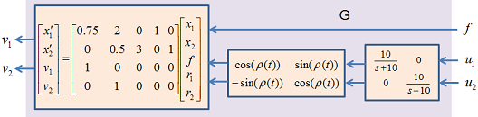
Figure 1: The parameter-dependent system G.
G is an LPV system with three inputs (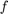, 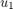, 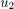), two outputs (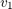, 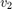), and four states. G can be written in the standard form as a parameter varying state-space system:
![$$
\left[ \begin{array}{c}
\dot{x}_1(t) \\ \dot{x}_2(t) \\
\dot{x}_3(t) \\ \dot{x}_4(t) \end{array} \right]
= \left[ \begin{array}{cccc}
0.75 & 2 & cos(\rho) & sin(\rho) \\
0 & 0.5 & -sin(\rho) & cos(\rho) \\
0 &0 &-10 & 0 \\
0 & 0& 0 & -10
\end{array} \right]
\left[ \begin{array}{c} x_1 (t) \\ x_2 (t) \\ x_3 (t) \\ x_4 (t)\end{array} \right]
\left[ \begin{array}{ccc}
0 & 0 &0 \\
3 & 0 & 0 \\
0 & 10 &0 \\
0 & 0 & 10
\end{array} \right]
\left[ \begin{array}{c}
f \\
u_1 \\
u_2
\end{array} \right]
\ \ \ \ \ \ \ (1)$$](Grid_Synthesis_eq09329330081923492225.png)
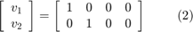
The following commands create a grid-based LPV model of the parameter dependent system in Equation (1):
% Define the time-varying real parameter. rho = pgrid('rho',linspace(-pi,pi,7)); rho.RateBounds = [-5 5]; % Define the A, B, C, and D matrices of the LPV system in Equation (1) pcos = cos(rho); psin = sin(rho); A = [0.75 2 pcos psin;0 0.5 -psin pcos;0 0 -10 0; 0 0 0 -10]; B = [0 0 0;3 0 0;0 10 0;0 0 10]; C = [1 0 0 0;0 1 0 0]; D = zeros(2,3); % Form the grid-based parameter-varying state-space system: G = pss(A,B,C,D)
PSS with 4 States, 2 Outputs, 3 Inputs, Continuous System. The PSS consists of the following blocks: rho: Gridded real, 7 points in [-3.14,3.14], rate bounds [-5,5].
Problem Formulation
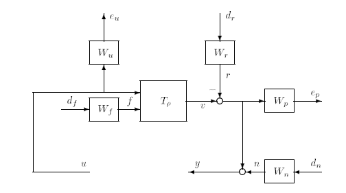
Figure 2: Weighted interconnection for synthesis (from [2])
The control interconnection structure is given in Figure 2, and the weights are defined as follows (from [2])
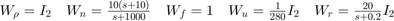
The weights are generated using the following commands:
% Weights
Wp = eye(2);
Wn = ss(10*tf([1 10],[1 1000]))*eye(2);
Wf = 1;
Wu = (1/280)*eye(2);
Wr = ss(tf(20,[1 0.2]))*eye(2);
The control problem interconnection with the weighting function is denoted as H, and is generated using the sysic command:
% Control Interconnection Structure systemnames = 'G Wp Wn Wf Wu Wr'; input_to_G = '[ Wf; u ]'; input_to_Wp = '[ G-Wr ]'; input_to_Wn = '[ dn ]'; input_to_Wf = '[ df ]'; input_to_Wu = '[ u ]'; input_to_Wr = '[ dr ]'; inputvar = '[ df; dr(2); dn(2); u(2)]'; outputvar = '[ Wu; Wp; G-Wr+Wn ]'; H = sysic
PSS with 8 States, 6 Outputs, 7 Inputs, Continuous System. The PSS consists of the following blocks: rho: Gridded real, 7 points in [-3.14,3.14], rate bounds [-5,5].
Synthesis
The original system G depends on the time-varying parameter 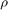, and the weighted interconnection H inherits this parameter dependence. Next we will synthesize a LPV controller for H. The LPV controller will be optimized for the prescribed parameter trajectories, i.e. 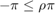 and 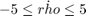. The resulting LPV controller will itself be parameter dependent and will depend on the parameter and its derivative 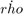.
The following code finds a controller Klpv which minimizes the induced 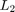 norm of lft(H,Klpv) when the rate of variation of is constrained: 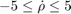:
% Basis function, b1 = basis(1,0); bcos = basis(pcos,'rho',-psin); bsin = basis(psin,'rho',pcos); Xb = [b1;bcos;bsin]; Yb = Xb; % LPV Rate-Bounded Control Design opt = lpvsynOptions('BackOffFactor',1.02); [Klpv,normlpv] = lpvsyn(H,2,2,Xb,Yb,opt);
The LPV controller is a pss object klpv
Klpv
PSS with 8 States, 2 Outputs, 2 Inputs, Continuous System. The PSS consists of the following blocks: rho: Gridded real, 7 points in [-3.14,3.14], rate bounds [-5,5]. rhoDot: Gridded real, 2 points in [-5,5], rate bounds [-Inf,Inf].
If we close the loop around the weighted interconnection, and form lft(H,Klpv), the controller achieves an induced norm which is bounded from above normlpv:
normlpv
normlpv =
0.9250
Pointwise analysis in the LTI framework
Lets apply Klpv to the original system G, and compare the open-loop vs closed loop response for an input:
Start by forming the closed loop system:
CL = feedback(G,Klpv,[2 3],[1 2],+1)
PSS with 12 States, 2 Outputs, 3 Inputs, Continuous System. The PSS consists of the following blocks: rho: Gridded real, 7 points in [-3.14,3.14], rate bounds [-5,5]. rhoDot: Gridded real, 2 points in [-5,5], rate bounds [-Inf,Inf].
Set the input and output names for CL
CL.InputName = {'f','u_1','u_2'};
CL.OutputName = {'v_1','v_2'};
Plot the output and input sensitivity functions at each point in the domain
SF = loopsens(G(:,2:3),Klpv); sigma(SF.So,'b',SF.Si,'r--')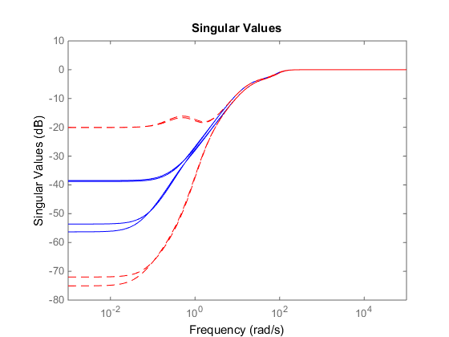
Compute the input disk margins of the closed-loop system at each point in the domain:
DMI = loopmargin(G(:,2:3),Klpv,'di');
The smallest input disk margin in the domain has a gain margin of:
lpvmin(DMI.GainMargin(2))
PMAT with 1 rows and 1 columns.
ans =
23.4339
The smallest input disk margin in the domain has a phase margin of:
lpvmin(DMI.PhaseMargin(2))
PMAT with 1 rows and 1 columns.
ans =
85.1130
Simulate the step response of the closed-loop system to a unit input, at each point in the domain:
step(CL(:,1))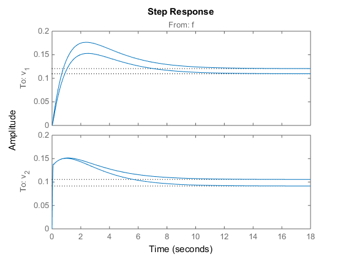
LPV Simulation
Next, we will compute the time-domain response of the parameter dependent closed loop system as the parameter follows a particular trajectory: 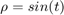. This simulation is different from the previous simulation, generated by the command step(CL(:,1)), which simlated the step LTI response of the closed-loop system at fixed values. To perform a parameter dependent simulation of the step response we use the lpvstep command:
% Define a time vector for the simulation t = 0:0.01:10; % Define a structure whose fields describe the trajectory of the parameter ptraj.time = t; ptraj.rho = sin(t); ptraj.rhoDot = cos(t); % Plot the parameter dependent step response for $\rho(t) = sin(t)$. lpvstep(CL(:,1),ptraj)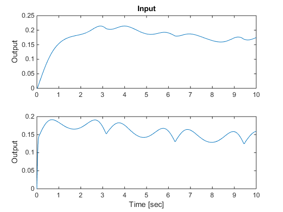
We can also look at the time-domain response for a custom input: Plot the parameter dependent response for a unit doublet command when 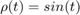.
u = [zeros(size(0:0.01:3)) ones(size(3.01:0.01:5)),...
-ones(size(5.01:0.01:7)) zeros(size(7.01:0.01:10))]';
lpvlsim(CL(:,1),ptraj,u,t);
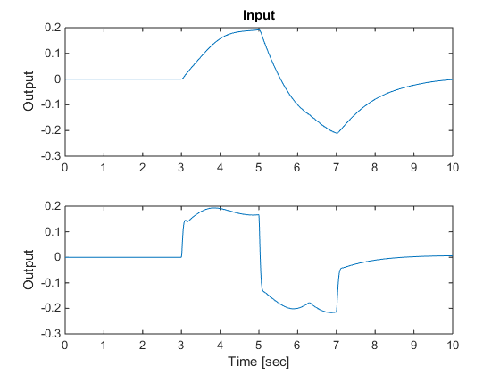